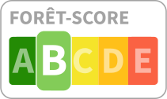
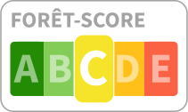
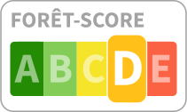
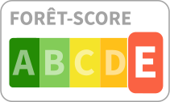

Forêt-Score - Un indicateur de santé et résilience des forêts
Le Forêt-Score est un indicateur destiné à évaluer la qualité et la durabilité des forêts d’une commune, à l’image du Nutri-Score pour l’alimentation. Il repose sur plusieurs critères liés à la gestion forestière, aux pratiques d’exploitation et à la préservation de la biodiversité.
Forêt-Score sur le territoire du PNR Millevaches
Interprétation du Forêt-Score
| Score | Catégorie | Signification |
|---|---|---|
| A (Excellent) | Forêt globalement bien gérée et résiliente | |
|  | B (Bon) | Bonne gestion, mais avec des axes d’amélioration dans la gestion à considérer |
|  | C (Moyen) | Gestion moyenne et équilibre fragile, vigilance nécessaire pour éviter des dérives, présence de risques écologiques |
|  | D (Médiocre) | Pression excessive sur la forêt, impact sur l’environnement et l’avenir de la filière |
|  | E (Critique) | Forêt surexploitée ou gravement menacée, perte de valeur durable sans action rapide |
Les détails concernant le calcul du score peuvent être retrouvés ci-dessous. En résumé, il dépend de quatre composantes : Taux de boisement, Taux de coupes forestières, Taux de coupes en espaces à haute valeur environnementale, Taux de monocultures.
Composantes du score
Le score est basé sur deux variables :
Taux de boisement
Représente la proportion de la surface forestière par rapport à la surface totale d’un territoire. Un taux élevé est généralement préférable, sauf en cas de surexploitation ou de monoculture excessive.
Échelle : 0 % (pas de forêt) à 100 % (territoire entièrement boisé).
Taux de coupes rases
Indique la part de la forêt soumise à des coupes rases (extraction totale du couvert forestier sur une surface donnée). Un faible taux est préférable pour la biodiversité et la résilience écologique.
Échelle : 0 % (aucune coupe rase) à 3 % et plus (forte pression).
Le score sera bientôt enrichi par ces deux variables :
[A VENIR] Taux de coupes en espaces à haute valeur environnementale
Mesure la part des zones forestières protégées (Natura 2000, réserves naturelles, ZNIEFF, etc.) ayant subi des coupes rases.
Échelle : 0 % (aucune coupe en zone protégée) à 1 % et plus (forte pression).
[A VENIR] Taux de monocultures
Correspond à la proportion approximative de forêt plantée après exploitation ou déforestation. Un bon équilibre entre régénération naturelle et plantation contrôlée est crucial.
Échelle : 0 % (pure forêt plantée mixte ou naturelle) à 100 % (monocultures).
Calcul du Forêt Score
Chaque composante est évaluée sur une échelle de A (Excellent) à E (Critique).
Le score final est le plus bas des scores obtenus à chaque composante.
Exemple : Si une forêt obtient A en boisement, B en coupes rases, C en espaces protégés, mais E en taux de plantation, → Le Forêt-Score sera E.